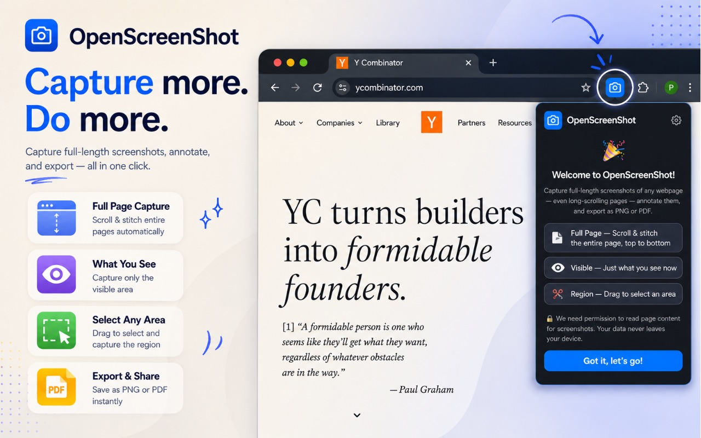
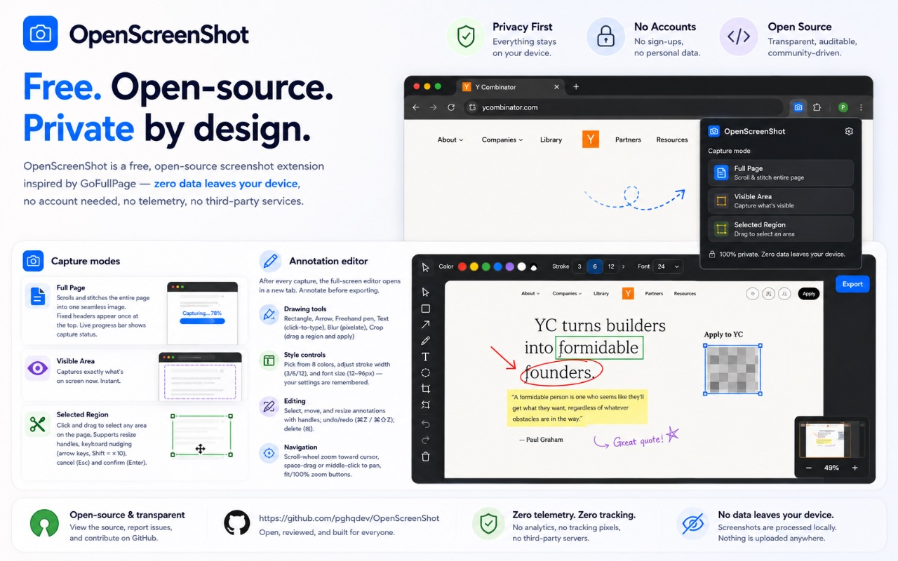
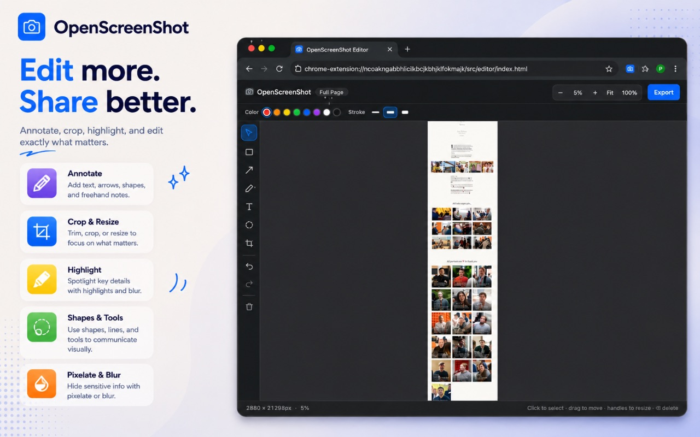
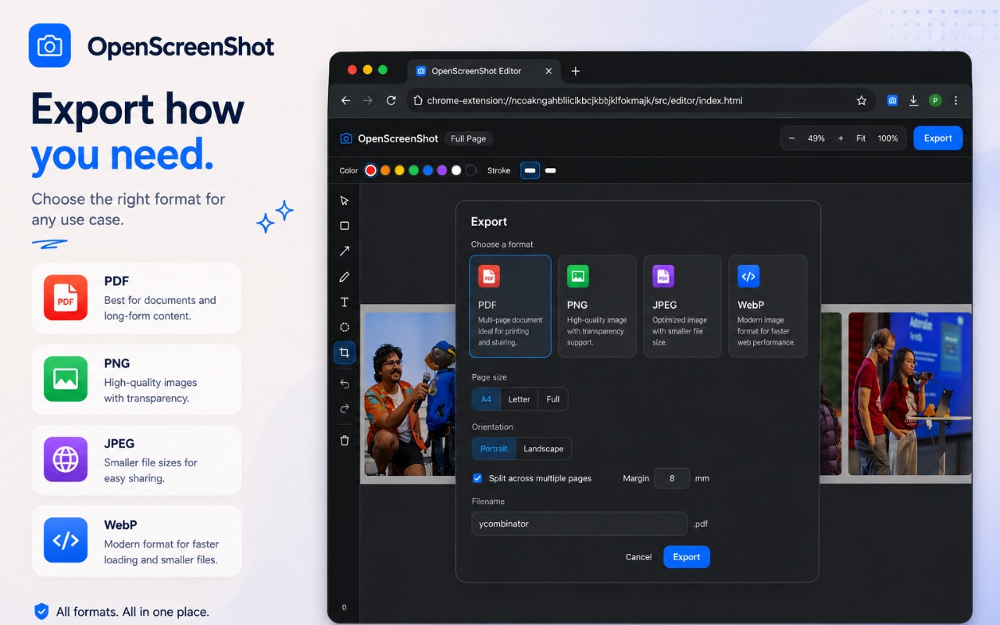

OpenScreenShot is a free, open-source Chrome extension for full-page, region, and visible-area screenshots. Annotate, then export to PNG, JPEG, WebP, or PDF. Everything stays in your browser.

One extension for the full screenshot workflow. No cloud, no account, no extra steps.
Scroll and stitch an entire page into one image. Fixed headers are captured once at the top, and a progress bar shows the status.
Drag a rectangle, then nudge it with arrow keys or resize handles. A live readout shows the exact width and height.
Rectangle, arrow, pen, text, blur, and crop. Eight colors, three stroke widths, undo/redo, and zoom to cursor.
PNG with transparency, JPEG with quality control, modern WebP, and multi-page PDF with fit-to-page options.
Export a single image page, fit to A4/Letter, or split across multiple pages with a 5mm overlap so content is not cut mid-line.
All capture, annotation, and export run locally. No analytics, no telemetry, no third-party services.
Full-page, visible area, or drag-to-select region. One click from the toolbar popup.

Every capture opens in a full-screen editor. Add shapes, arrows, text, or blur sensitive areas, then export in one click.

Choose the right format for the job. PDF supports single-page, multi-page with overlap, custom page sizes, and margins.

Capture, annotate, and export run entirely in your browser. Nothing is uploaded, collected, or transmitted. Read the Privacy Policy for details.
Free, open-source, and private. Available on the Chrome Web Store.